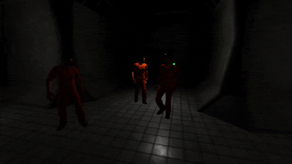

Recent News
Update 0.4.54
Features
- Added SCP 323 and SCP 323-1
- SCP 035 now drops as a mask on death
- Health VFX now fades out over time
- SCPs now show correctly in the facility creator spawn thumbnails
- Added some decorations to SCP 049's containment chamber
- Server browser should now update connected players correctly
- Added new humanoid ragdoll system
- Renamed AR-15 to M4-A1
- Further Optimisation for AI SCP and AI MTF movement system
Balancing
- Adjusted AK-47 and M4A1 recoil amount
- Adjusted AK-47 fire rate to 600RPM
- Increased AK-47 damage
- Adjusted M4-A1 fire rate to 800RPM
- Reduced M4-A1 damage
Bug Fixes
- Fixed doors having floating buttons (ongoing fixes)
- Potential fix for mouse cursor disappearing in the facility creator
- Fixed framerate issues with AI movement system
- Fixed highlighting/fog visual glitch in Euclid Zone
- Fixed grenades throwing not syncing correctly on multiplayer
- Fixed grenades VFX not syncing correctly on multiplayer
- Fixed grenades VFX not removing over time on multiplayer
- Fixed grenades SFX not playing on multiplayer
- Fixed grenades causing players to look like they are flying on multiplayer
- Fixed objects hovering near D Class cell doors on multiplayer
- Fixed some SCPs attacking faster than their max attack speed
- Fixed SCP 069 not shapeshifting correctly on multiplayer
- Fixed AI SCP and AI MTF teleporting if player is an SCP
- Fixed SCP 939 AI attacking and chasing players when they are sneaking
- Fixed SCP 035 equip not ending game if all humanoids are dead
Update 0.4.53
Features
- SCP 173's eyes now glow when pursuing a player or AI
- Playable and AI SCPs are now randomized after every match.
- Removed headbob from scp 096 as it made movement difficult
- SCP 096 should play crying and rage SFX correctly in multiplayer when going away from it and returning
Balancing
- Playable AI SCPs are now limited to 6 per singleplayer and multiplayer containment breach game
Bug Fixes
- Fixed doors having floating buttons
- Potential fix for mouse cursor disappearing in the facility creator
Update 0.4.52
Features
- SCPs should no longer teleport near players
- Added more accurate SCP 173 vision system
- Added more doors to D Class Cell area
- Discord status should now update correctly when in a multiplayer game
- Healing items now only heal when player is less than max health
- Increased strength of SCP 173's normal map
Bug Fixes
- Scare SFX for other players on SCP 173 and SCP 096 should also no longer play on the server
- Fixed positioning of SCP 173 containment chamber
- Fixed SCP 066 not rotating
Update 0.4.51
Features
- Added new optimsation system for AI SCP movement
- Added new optimsation system for AI MTF movement
- Optimised lighting in euclid zone
- Optimised SCP 096 animation CPU performance
- Optimised MTF, Facility Guard and Chaos Insurgent animation CPU performance
- Lowered keycard level for many SCP chambers in euclid zone
Balancing
- Reduced movement speed of SCP 069
Bug Fixes
- Potential fix for weapons becoming gigantic in euclid zone when dropped outside of visible range
- Fixed SCP 173 not changing materials when aggressive for clients
- Fixed SCP 173 mesh going through walls
- Fixed SCP 939 head going through walls
- Adjusted SCP character collision size
- Fixed SCP 173 killing players through doors
Update 0.4.50
Features
- SCP players should now be able to interact with objects even if the UI isn't showing correctly
- Added new client aiming system (Ongoing work)
- Minor CPU optimisation with weapon reticle UI
Bug Fixes
- Fixed SCP 294 in multiplayer
- Fixed SCP 330 in multiplayer
- Fixed SCP 207 in multiplayer
- Tweaked AI control system to prevent doors not interacting when players respawn as AI
- Fixed SCP 049 not playing footsteps when walking right
- Fixed SCP 049-2 not being able to look vertically - reported by Foxxxx
- Fixed items not highlighting their inventory text when equipped for clients
- Fixed storage zone door showing an error state randomly
- Fixed gun sprint animations not playing
- Tweaked door system to prevent buttons from stacking onto eachother
Update 0.4.49
Features
- Players are now assigned an SCP to play when joining after the match has started if available
Bug Fixes
- Fixed equipping SCP 018 making players float
- Fixed up arrow key doing down in the facility creator
- Reduced collision box for SCP 012
- Doors now block movement and SCP vision over time (Previously was instantly after pressing the button)
- Fixed CB multiplayer end info screen not displaying correctly
- Fixed Heavy reverse item room having slight rotation
- Fixed reverse item rooms having spawn point being inverted
- Potential fix for loss of input after switching between singleplayer CB and other game modes repeatedly
- Fixed 173 containment cage going through floor when dropped
- Fixed SCP corridor room doors becoming error doors incorrectly
Update 0.4.48
Features
- Added stuck button to teleport back to Class D cells if you are stuck in an overlapping room (Temporary)
Bug Fixes
- Fixed AI controlled player SCPs not being able to interact with doors when packet loss is over 10%
- Fixed AI controlled player SCP maps showing the floor
Update 0.4.47
Features
- AI unlocked map rooms now show when controlling an AI SCP after death
- SCP 173 players cannot see their own body now to prevent the mesh going infront of the camera
- Added remaining SCPs counter to tab menu
Balancing
- SCP 096 now walks faster when players aren't near him
- Reduced view fog darkness slighty
Bug Fixes
- Fixed AI controlled player SCPs not being able to interact with objects
- Fixed ground clutter spawning on tables and shelves
- Adjusted SCP 714 chamber to prevent overlapping
- Fixed containment breach end game statistics repeating player names
Update 0.4.46
Bug Fixes
- Shrunk SCP 049 collision box to prevent him getting stuck near doors
- Fixed floating spawn positions in the facility creator on specific rooms
- Fixed map showing in 087 singleplayer
- Fixed flickering lights being too bright in 087 singleplayer
- Fixed intro UI removing itself without player interaction in 087 singleplayer
- Tweaked collision testing to prevent overlapping SCP rooms
Update 0.4.45
Balancing
- SCP 1048A should now not attack instantly after the match starts
Bug Fixes
- Fixed 069 sliding animations
- Fix for movement issues when controlling AI SCPs
- Fix for AI SCP controlling not showing the map or other UI
Update 0.4.44
Features
- Players now respawn as AI SCPs after death if available
- Damage values under 7 points now don't play hit SFX
- Adjusted SCP 096 camera position
- Added animations for SCP 035 players
- Added placeholder animations for SCP 069
Balancing
- Increased AK-47 and AR-15 damage
Bug Fixes
- Fixed critical issue with 914 refining
- Potential fix for friends list UI going off the screen
- Fixed non aggressive AI SCPs chasing players
- Reduced the rooms size of SCP 005 and SCP 012 to prevent overlapping
Update 0.4.43
Features
- Spectator camera now only cycles through players
- Items now drop on the floor after death
- Added an alive counter to tab menu
- Added active headphones used for SCP 1048a recontainment
- Added weapon recoil system
- Optimised ragdoll system
- Increased max bandwith settings for multiplayer
- Gate disabled messages now say Gate Locks Disabled for clarification
- Added new spectator system
- Added temporary SCP 069 animations
- Added Chaos Insurgent animations
- Added SCP 035 animations
- MTF and CI now spawn with grenades
Balancing
- Increased flashlight brightness
- SCP 1048A now doesn't attack as soon as the match starts
- Increased SCP 049 attack radius
- Nerfed SCP 173 chase distance
Bug Fixes
- Fixed crash when trying to load SCP 096 mode
- Fixed aim down sight not changing FOV
- Fixed SCP 038 chamber not showing on map correctly
- Chaos insurgent place holder models now have the correct materials
- Fixed escaping the facility not going into spectator camera
- Fixed 173 and 096 playing scare sfx on the humanoid host when other player see them
- Fixed not spectating if joining a game in progress
- Fixed many instances of rooms overlapping whilst generating facilities (ongoing fix)
- Fixed stuck point in office room against desks
- Fixed checkpoint doors overlapping the wall
- Fixed SCP 096 attacking players without damage who haven't seen his face
- Fixed Gamemode text not being shown in the tab menu
- Fixed gun world models showing shadows incorrectly
- Fixed items sliding players around when equipped
- Fixed main menu scaling issues for 21:9 monitors
- Fixed interact text remaining on the screen after walking away from a door backwards
- Fixed flashing VFX on SCP 939
- Fixed arrow keys not moving in the correct directions
Update 0.4.42
Features
- Added new SCP 500 model
- SCP 207 now does damage after drinking many
- Added new SCP rooms to facility creator
- Added some of the new SCP posters (WIP)
- Added mode descriptions when hovering over the buttons
Balancing
Bug Fixes
- Fixed saving incomplete levels in facility creator
- Fixed SCP 714 not affecting SCP 012
- Fixed input loss when going from singleplayer to facility creator
- Fixed some SFX playing while the game is paused
- Fixed LOD issues with SCP 173
- Keycard doors now use correct SFX
Update 0.4.41
Features
- Added more item spawns to Storage Zone
Balancing
- Jumping takes stamina
- Increased SCP 966 damage
- Increased SCP 939 speed
Bug Fixes
- Fixed gate security terminals showing the incorrect interaction message
- Fixed items duplicating in singleplayer containment breach when saving and loading
- Fixed SCP 106 chamber not showing on map correctly
- Fixed some rooms having void doors
- Fixed SCP 966 showing when NVG aren't equipped
- Storage elevators now use correct model
- Fixed ground clutter on walls
- Fixed SCP corridor room alignment
Update 0.4.40
Features
- Added Gate A security room
- Doors can now be opened behind the player
- Added loading bar to singleplayer containment breach
Bug Fixes
- Fixed another SCP 096 vision crash bug
- Fixed SCP 939 spawning in only one location
- Fixed duplicated SCP containment chambers
- Fixed some key objective rooms not spawning
- Fixed generation errors creating very small zones
Update 0.4.39
Features
- Items now save correct in singleplayer containment breach
- SCP 1048a now hurts players that pick it up
Bug Fixes
- Fixed SCP 096 vision crash bug
- Fixed SCP 1048a audio remaining at equip up location
Update 0.4.38
Features
- Added new AI v2 state system
- Moved all aggressive SCP to AI v2 system
- Moved MTF AI to AI v2 system
Bug Fixes
- Fixed SCP 096 vision issues
- Fixed entrance elevator model
- Fixed click collision issues for facility creator spheres
- Fixed door alignments for some rooms
Update 0.4.37
Features
- Added new SCP 049 footstep SFX
- Added new SCP 049 vision SFX
- Added new SCP 966 ambient SFX
- Added new damage VFX
Bug Fixes
- SCP now avoid eachother and don't walk into eachother
- Fixed entrance elevator model
- Fixed click collision issues for facility creator spheres
Update 0.4.36
Features
- Added direction text to checkpoint areas
- Renamed Facility Zones
- Added new elevator models
Balancing
- Adjusted sprint speed for humanoid character
- Adjusted SCP AI door interaction distance
- Reduced SCP 096 vision distance
- Reduced SCP 173 vision distance
Bug Fixes
- Fixed negative health on death
- Fixed SCP 914 desync issues
- Fixed Heavy elevators not aligning with elevator doors
- Added fixed elevator model
- Fixed some instances of doors going through room geometry
- Fixed 096 triggering multiple times on the same player
- Fixed keycard doors spamming SFX
- Ground clutter now snaps correctly to surfaces
- Fixed more doors becoming error doors
- Fixed SCP 096 vision ignoring walls
Update 0.4.35
Features
- Added gas corridors into heavy containment
- Extended inventory check system for usable items
- SCP 096 destroyed doors now save correctly
Balancing
- Adjusted attack distance for AI SCP
Bug Fixes
- Fixed 096 vision stability issues
- Fixed SCPs becoming less aggressive
- Fixed office doors being slightly transparent
- 173 and 096 vision now checks for doors
- MTF AI now can shoot at a distance against players
- Fixed MTF AI standing still after moving
- Fixed health bar not updating on death
- Adjusted LOD distances for 106 and 096
Update 0.4.34
Features
- Added mouse sensitivity to control menu
- Added sneak key rebind option
- Explored map rooms now save and load
- SCP 096 now uses new vision system
- SCP 096 trigger state saves and loads correctly
Balancing
- Increased stamina regeneration rate
- Increased prion damage over time
Bug Fixes
- Increased brightness in SCP 005 Room
- SCP 714 now works correctly in SCP 012 chamber
- Potential fix for AI standing still when they have lost their target
- Reduced volume of SCP 1048A scream
- Fixed SCP 966 gliding when attacking
- Fixed 049 item room shelves not being interactable
- Fixed doors popping through some rooms
- Fixed duplication glitch for weapons on save and load
- Potential fix for normal doors becoming error doors
- Fixed SCP 096 gliding when attacking
- Fixed doors loading as errors when 096 destroys them
Update 0.4.33
Balancing
- Reduced SCP 096 visibility range
Bug Fixes
- Optimised corridor room item room 1 in light
- Fixed SCP 096 AI forgetting about targets
- Fixed Discord link not working in game
- Fixed SCP 173 recontainment cage not working correctly
- Fixed reversed heavy containment item room not spawning items
Update 0.4.32
Bug Fixes
- Increased range of detection for MTF AI
- Fixed SCP 096 AI forgetting about targets
Update 0.4.31
Features
- Gate B computer now states if gate is disabled
- Updated gate disable and 079 disable button to a computer model
Bug Fixes
- SCP 1471 now damages players
- Gate A and B no longer open by themselves
Update 0.4.30
Features
- Added larger hitboxes for small battery and health syringe
Bug Fixes
- Fixed MTF audio playing instantly on load game
- Additional SCP 173 stability fixes
- Fixed completion timer saving from previous runs
- Adjusted post processing fog
- Fixed doors becoming error doors incorrectly
- Opened doors now persist over save and load cycles
Update 0.4.29
Features
Bug Fixes
Update 0.4.28
Features
- Added new heavy and light item rooms
- Player Status system now saves in Singleplayer Containment Breach
- Weapons now save in Singleplayer Containment Breach
- Added new button hover SFX
- Optimised AI vision checks
- Adjusted lighting in Light Containment
- AI MTF now save and load correctly in Singleplayer Containment Breach
- Fixed normal doors becoming error doors in Singleplayer Containment Breach
Balancing
- Reduced SCP 106 movement speed
- Reduced humanoid max sprint speed
Bug Fixes
- Optimised Light item room
- Optimised Entrance large X room
- Fixed SCP 914 spawning items behind output box
- Fixed MTF announcement SFX playing multiple times
- Fixed timer showing incorrect values
- Fixed save file data smuggling between new games
Update 0.4.27
Features
- Main menu music and facility creator music now fade in
- Added timer to Singleplayer Containment Breach
- Added normal map for Facility Doors
Bug Fixes
- Fixed SCP 173 stability issues
Update 0.4.26
Bug Fixes
- Fixed SCP 173 stability issues
Update 0.4.25
Features
- Reduced file size of the game by 57% (was 8.6gb~ now 3.5gb~)
Bug Fixes
- Fixed SCP 966 not attacking
- Fixed SCP 173 moving when visible
- Fixed SCP 096 triggering when looking at floor
Update 0.4.24
Features
- Rewritten SCP 173 to be more optimised and efficient
- Rewritten SCP 096 to be more optimised and efficient
- Added new themes to the main menu and facility creator
Bug Fixes
- Fixed 087 menu not showing correctly
Update 0.4.23
Features
- Added dust particles to containment zones
- Added new flashlight lighting
- Added new NVG VFX
- Added door state saving to singleplayer CB
- Turning into SCP 049-2 now triggers game over in singleplayer CB
Bug Fixes
- Fixed 966 visibility issues
- Fixed large medkit issue
- Fixed credits overlap on main menu
- Fixed 173 containment cage moving rooms around
- Fixed Press E to Open text showing all the time
- Fixed escape key not being bindable
- Fixed equip and neck snap SFX not adjusting volume
- Fixed SCP 038 door alignment
- Fixed facility commition ambience not adjusting volume
- Fixed no input on multiplayer to singleplayer switch
Update 0.4.22
Features
- Added new SCP 008 Ambience
- Added new Light Ambience
- Added new Heavy Ambience
- Added new Entrance Ambience
- Added new Storage Ambience
- Added new SCP 049 room ambience
- Added out of bounds checks
- Added cause of death to SP containment breach
- Added 173 containment cages to the emergency containment chambers
- Added realistic movement for the flashlight
Bug Fixes
- Fixed Health items being usable when health is full
- Adjusted tesla gate VFX duration
- Fixed 049 Containment Chamber shelf collision issues
- Fixed SCP 008 closing the vent on SP load incorrectly
- Fixed flashlight charge not saving correctly in SP containment breach
- Fixed items not dropping in heavy containment zone
- Fixed weapons not showing on SP Continment Breach
- Elevators now block vision correctly
Update 0.4.21
Features
- Removed power drain on map use
- Player stats now save and load correctly
Bug Fixes
- Fixed loading SP save overlapping rooms
- Fixed Crying sounds and re-implemented them
- Fixed surface checkpoint duplicating on SP load
- Headbob now remembers choice when loading save files
- Fixed ending variables not saving correctly in singleplayer CB
- Fixed gate door desync in multiplayer CB
- Fixed SCP 008 VFX not playing
- Fixed heavy elevators not working correctly
- Fixed host not having status effect visuals
Update 0.4.20
Bug Fixes
- Added view head bobbing toggle to controls menu
Update 0.4.19
Bug Fixes
- Fixed heavy elevator taking players to light containment
- Fixed duplicate spawning rooms when loading a singleplayer save
- Fixed SCP 914 making items outside of the output box
- Fixed way of getting behind SCP 914 machine
Update 0.4.18
Features
- Player Status System now displays screen effects correctly for all player types
Balancing
- SCP 1048A now does less tick damage
Bug Fixes
- Fixed death on jump
- Fixed thousands seperator showing on D Class and E Class identification numbers
- Fixed over aggressive LOD settings
- Fixed random neon effects near D Cell block door
- Fixed seeing other player's post process effects when close
- Fixed damage effect looking icy
Update 0.4.17
Features
- Added new MTF and GOI spawning routines
- Added new lighting and visuals to surface zone
Bug Fixes
- Fixed grey fog when reaching surface zone
- Reduced Max FPS to 60 for game hosts to prevent tick rate issues
- Increased net update range for elevator doors to prevent desync
Update 0.4.16
Features
- Added new graphical quality options
- Heavy GPU optimisation for character models
Bug Fixes
- Fixed desync with elevator doors
- Increased Max FPS to 240fps
Update 0.4.15
Features
- Added facility office on surface level
- MTF spawns have been temporarily moved to the outside facility zone
- Improved voice chat stability greatly
Bug Fixes
- Fixed scaling issues with elevators
- SCP 575 now is blocked by MTF lights
- AI now no longer show the last player name you have seen
- Fixed 173 attacking players whilst being seen
Update 0.4.14
Bug Fixes
- Fixed items not using on keypress
- Fixed doors glitching between states on opening and closing
Update 0.4.13
Bug Fixes
- Optimised netcode for Doors
- Optimised netcode for Keycard Doors
- Optimised netcode for Random Facility Rooms
- Optimised netcode for Items
- Optimised netcode for End Triggers
Update 0.4.12
Bug Fixes
- Fixed blink meter not showing when 173 is seen
- Fixed 575 vision effect not displaying
- Fixed gate A and gate b opening with interact key
- Fixed AI MTF not dying after reaching 0 health
Update 0.4.11
Bug Fixes
- Optimised AI SCP network code
- Optimised AI MTF network code
- Optimised SCP base network code
- Optimised Humanoid base network code
Update 0.4.10
Bug Fixes
- Fixed SCP 087 singleplayer door issues
- Fixed SCP 087 singleplayer camera issues
- Fixed SCP 087 reverb
- Potential fix for voice chat not working once meeting players for a second time
- Fixed elevators delaying for a few seconds
- Fixed elevator mesh placement
- Reworked damage screen effect
- Fixed elevators delaying for a few seconds
- Fixed AI falling through floor after using elevators
Update 0.4.9
Bug Fixes
- Adjusted SCP 096 mode objective spawns
- Fixed SCP 096 mode not starting when the facility loads
- Fixed door synchronisation issues
- Fixed for elevators not working
- Adjustments to the voip system for added stability
- Possible fix to map not refreshing when the elevators are used
- Possible fix for spectator camera not refreshing rooms correctly
- Potential fix for spectator camera focussing on the void
Update 0.4.8
Bug Fixes
- Adjusted CB spawning system to prevent null spawns
- Fixed storage spawns spawning SCP 939 players above the rooms
- AI Characters now have lower net refresh rates
Update 0.4.7
Bug Fixes
- Map can now be closed when battery is empty
- Fixed SCP 049-2 dying instantly when taking damage
- Fixed some classes showing an empty character information screen without disappearing
- SCP 049-2 and SCP 939 now allow players to spectate correctly on death
- Potential fix for SCP 173 attacking when seen
- Keycard doors are now working correctly for all players
- Potential fix for overall graphics setting not changing
- Potential fix for arms dissapearing on weapon pickup
- Fixed NTF not spawning sometimes on D Class Riot mode
Update 0.4.6
Features
- Scientists now have random role play names assigned to them
- Reduced FPS cap to 60fps to test voice issues
Bug Fixes
- Class E personnel now have their character information show correctly
- Fixed news post overlapping other menus
Update 0.4.5
Features
- Added SCP 1048 and SCP 1048A back into the facility
- SCP 939 AI now ignores sneaking players
- Raised FPS cap to 240fps
Balancing
- SCP 1048A now takes longer to hurt players
Bug Fixes
- Fixed SCP 939 all spawning on one spawn point
- Fixed news post overlapping other menus
- Fixed upside down camera in SCP 038's containment chamber
- Fixed flashlights not preventing SCP 575 from moving
- Fixed office room void doors
- Fixed office room spawn offsets
- Night vision goggles are working correctly for clients
- Fixed random fog in Class D cell area
- Small SCPs now pickup correctly for clients
Update 0.4.4

Features
- Added news post to main menu
- Enabled custom level uploading
- SCP AI can now travel between containment zones
- Added random commotion SFX system to random facility
- Looking at a player will now show their steam name and RP name
Balancing
- MTF AI now spawn in entrance zone after two minutes
Bug Fixes
- Fixed weapon models not representing the equipped weapon
- Fixed SCP 173 invisibility issue
- Fixed audio muffling when playing guard and MTF classes